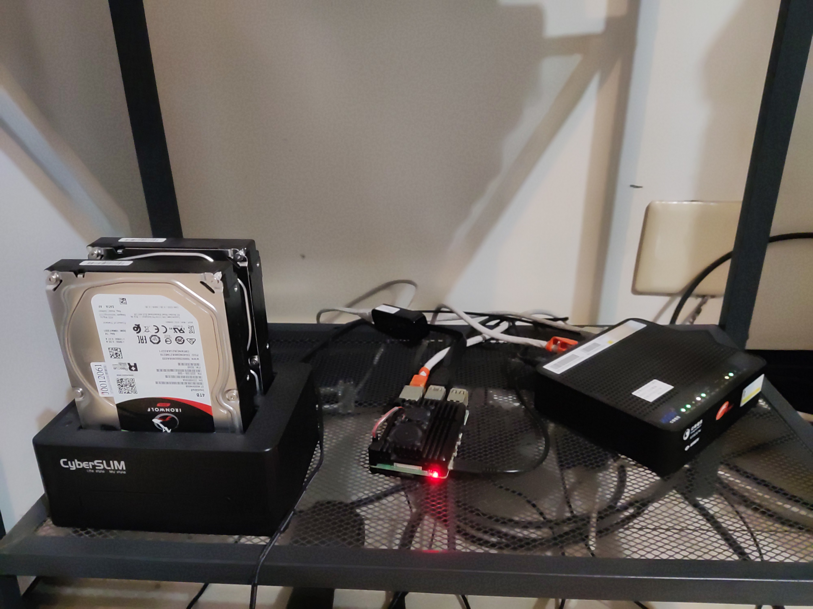

indieveloper
獨立開發者
宏信 wancat
「雲端」就是別人的電腦
架設自己的伺服器
「伺服器」就是開著的電腦
而且其實很便宜
樹梅派 + 2 x 4TB 外接硬碟

### 自由軟體 * Linux * Nextcloud * Hugo * Jitsi
透過影片來傳播給大眾
### 邀請有興趣的人一同來討論！ 社群行銷、影片相關經驗者 \# 新參者友善 Slack: indieveloper